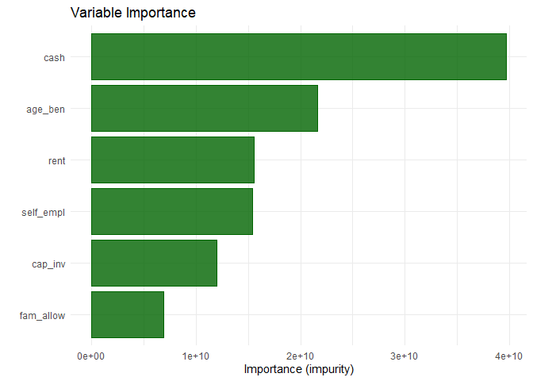
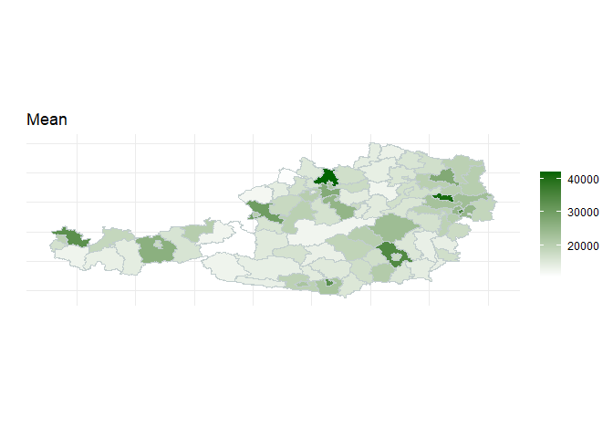

The package promotes the use of Mixed Effects Random Forests (MERFs) for applications of Small Area Estimation (SAE). The package effectively combines functions for the estimation of regionally disaggregated linear and nonlinear economic and inequality indicators using survey sample data. Estimated models increase the precision of direct estimates from survey data, combining unit-level and aggregated population level covariate information from census or register data. Apart from point estimates, MSE estimates for requested indicators can be easily obtained. The package provides procedures to facilitate the analysis of model performance of MERFs and visualizes predictive relations from covariates and variable importance. Additionally, users can summarize and map indicators and corresponding measures of uncertainty.
Installation
You can install the development version of SAEforest from GitHub with:
# install.packages("devtools")
devtools::install_github("krennpa/SAEforest")Example
This is a basic example which demonstrates the functionality of this package:
library(SAEforest)
data("eusilcA_pop")
data("eusilcA_smp")
income <- eusilcA_smp$eqIncome
X_covar <- eusilcA_smp[,-c(1,16,17,18)]
#Example 1:
#Calculating point estimates and discussing basic generic functions
model1 <- SAEforest_model(Y = income, X = X_covar, dName = "district",
smp_data = eusilcA_smp, pop_data = eusilcA_pop)
#SAEforest generics:
summary(model1)
#> ________________________________________________________________
#> Mixed Effects Random Forest for Small Area Estimation
#> ________________________________________________________________
#> Call:
#> SAEforest_model(Y = income, X = X_covar, dName = "district",
#> smp_data = eusilcA_smp, pop_data = eusilcA_pop)
#>
#> Domains
#> ________________________________________________________________
#> In-sample Out-of-sample Total
#> 70 24 94
#>
#> Totals:
#> Units in sample: 1945
#> Units in population: 25000
#>
#> Min. 1st Qu. Median Mean 3rd Qu. Max.
#> Sample_domains 14 17.0 22.5 27.78571 29.00 200
#> Population_domains 5 126.5 181.5 265.95745 265.75 5857
#>
#> Random forest component:
#> ________________________________________________________________
#>
#> Type: Regression
#> Number of trees: 500
#> Number of independent variables: 14
#> Mtry: 3
#> Minimal node size: 5
#> Variable importance mode: impurity
#> Splitrule: variance
#> Rsquared (OOB): 0.62976
#>
#> Structural component of random effects:
#> ________________________________________________________________
#> Linear mixed model fit by maximum likelihood ['lmerMod']
#> Formula: Target ~ -1 + (1 | district)
#> Data: data
#> Offset: forest_preds
#>
#> AIC BIC logLik deviance df.resid
#> 39193.1 39204.2 -19594.5 39189.1 1943
#>
#> Scaled residuals:
#> Min 1Q Median 3Q Max
#> -2.9730 -0.5194 -0.0759 0.4448 11.8159
#>
#> Random effects:
#> Groups Name Variance Std.Dev.
#> district (Intercept) 11157235 3340
#> Residual 30335770 5508
#> Number of obs: 1945, groups: district, 70
#>
#> ICC: 0.2688944
#>
#> Convergence of MERF algorithm:
#> ________________________________________________________________
#> Convergence achieved after 4 iterations.
#> A maximum of 25 iterations used and tolerance set to: 1e-04
#>
#> Monitored Log-Likelihood:
#> 0 -19545.67 -19573.45 -19593.59 -19594.53I included some further features to inspect the model graphically. For instance look at the following output from the generic function plot, which shows a so-called variable importance plot: 
#> Press [enter] to continueWe cannot only inspect the model graphically, but also map our indicators. Take a look at this example on Austrian pseudo-data for district-level mean income produced by the function map_indicators: 
I hope you like this presentation and the package. If you are interested in model-based SAE you should definitely also check out package emdi https://cran.r-project.org/web/packages/emdi/.